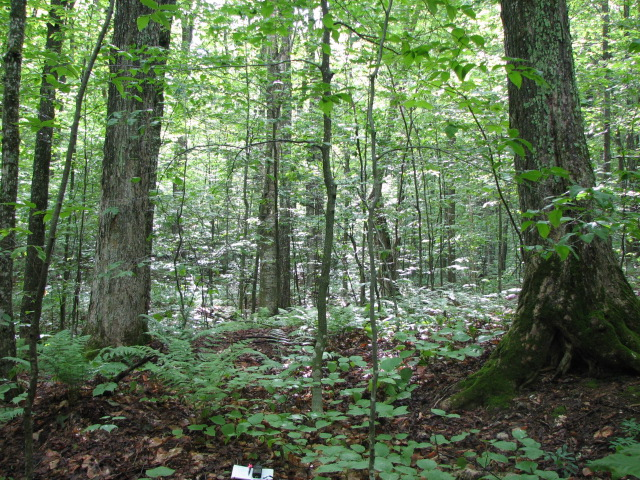
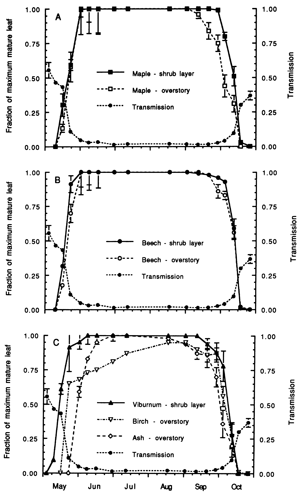
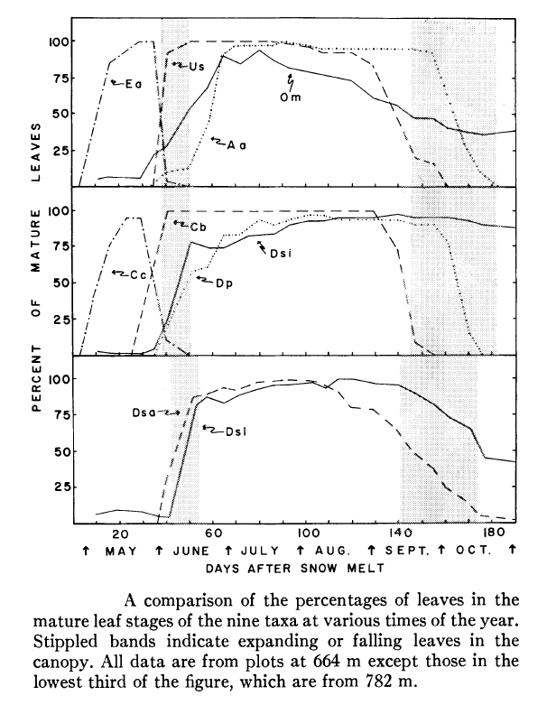
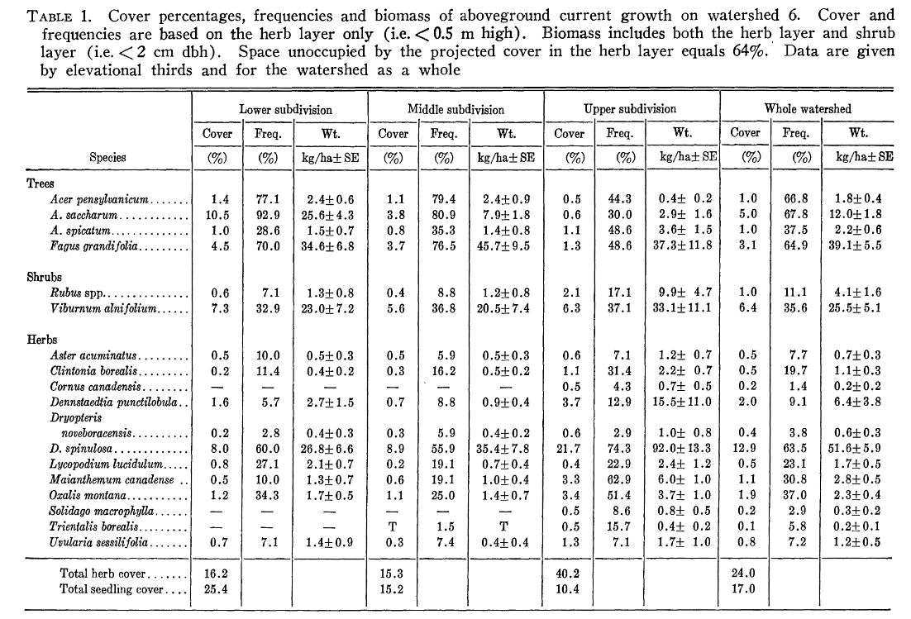
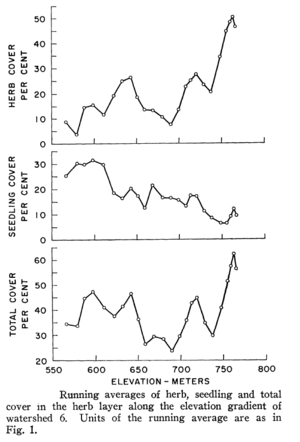
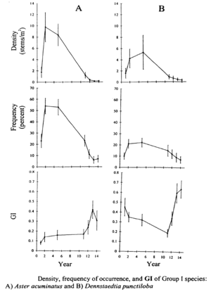
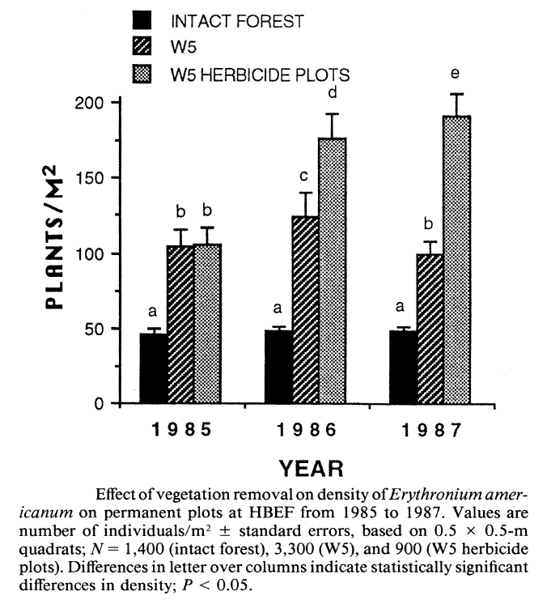
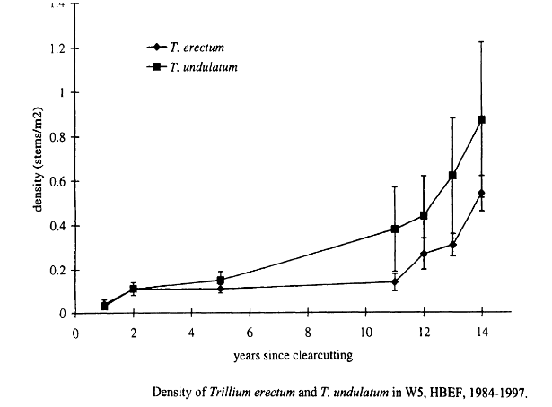
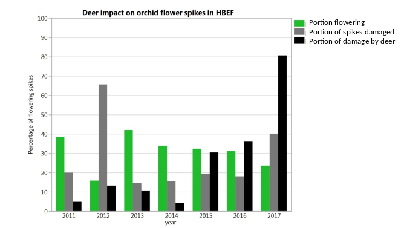

20 Understory Vegetation
Chapter Editors: Timothy Fahey and Natalie Cleavitt
20.1 Introduction
Botanists, ecologists and woodland trampers have always been fascinated by the complex understory vegetation of forest ecosystems. The woodland vegetation includes many familiar components such as lovely flowers, lush ferns and tasty berries, as well as less well studied groups such as lichens and bryophytes (the mosses and liverworts). Most of the plant diversity in the forest resides exclusively in the understory. The composition of understory vegetation varies more than the overstory trees, depending in part on subtle differences in site quality which allows foresters to indirectly classify site index for management purposes on the basis of understory composition (Carmean 1975). The spatial patterns of understory plant distribution present intriguing questions for field naturalists and researchers such as why are the plant distributions so patchy (Figure 20.1) — is it related environmental heterogeneity or historical disturbance? What mechanisms favor the co-existence of so many plants in the understory, including closely-related taxa? The importance of understory vegetation in ecosystem processes such as production and nutrient cycling has received limited attention. From a timber management standpoint perhaps the most important potential role of understory vegetation is suppression of successful tree regeneration following harvest (e.g. ferns; Horsley 1993). Conversely, some studies indicate that an enduring legacy of forest harvest is a reduction in the diversity of understory herbs (Duffy and Meier 1992) or loss of sensitive epiphytes (e.g., Larsson et al. 2014; Caners et al. 2013).

The Hubbard Brook Ecosystem Study includes a long history of research on understory vegetation, dating back to early, comprehensive work on (W6) (Siccama et al. 1970) that included sampling composition, productivity and nutrients. Some detailed floristic surveys have been conducted, providing initial checklists of vascular plants (Teeling et al. 2001), Bryophytes (Cleavitt and Fahey 1995) and epiphytic macrolichens (Clyne and Cleavitt unpublished). Detailed studies of understory plant phenology (Mahall and Bormann 1978), life history and demography (Cleavitt et al. 2016), nutrient retention by a spring ephemeral (Muller and Bormann 1976), and demographic responses to canopy opening (Hughes et al. 1988) provide a rich picture of understory vegetation dynamics at HB. The effects of forest cutting on the diversity, composition and dynamics of understory vegetation have been the subject of several studies on the experimental watersheds at HB (W2- Reiners 1992; W4-Gove et al. 1992; W5- Hughes and Fahey 1991). In this chapter we provide a brief synthesis of HB research on understory vegetation.
20.2 Environment, Phenology, and Physiology
The forest understory environment is characterized by severe resource scarcity, especially for light and mineral nutrients, which are co-opted by the overstory trees. However, under the predominantly deciduous forest canopy, light availability fluctuates seasonally in relation to spring leaf out and fall senescence (Gill et al. 1998), and availability of limiting nutrients like N also may fluctuate seasonally (Dittman et al. 2007). Gill et al. (1998) measured daily median transmission of photosynthetically-active radiation (PAR) at 1m above the ground beneath the hardwood forest canopy at HB over the warm season from May-October. They observed that PAR transmission declined rapidly from 55% in early May to about 5% at the end of May and then gradually declined to the mid-summer minimum of 1.5-2% by late June (Figure 20.2). Beginning in late September, autumn leaf fall resulted in increased transmission reaching 37% by the end of October. On this basis, four seasons have been distinguished for understory plants in the deciduous forest: winter (cold); spring light (late April following snowmelt to late May leaf out); summer shade (June-September); and autumn light (late September through October). Notably, the timing of these seasons is rapidly changing with climate warming (see Climate Change Chapter).

Mahall and Bormann (1978) measured the vegetative phenology of understory herbaceous plants at HB (Figure 20.3), and they identified four classes of herbs on this basis: 1. true “spring ephemerals” (Erythronium americanum, Claytonia virginica) whose leaves mature a few days after snowmelt and abruptly senesce with canopy leaf out; 2. “summer greens” (many species, including Clintonia borealis and Uvularia sessilifolia) whose leaves gradually mature during the spring light phase and persist through much of the summer shade phase but senesce well before the autumn light phase; 3. “late summer” herbs (Dennstaedtia punctilobula, Aster acuminatus) whose leaves do not mature until the summer shade phase and do not senesce until late in the autumn light phase; and 4. “semi-evergreens” (Dryopteris spinulosa and Oxalis montana) which maintain some mature leaves during all four phases (Figure 20.3).

These distinct phenological patterns represent differing strategies for coping with the understory environment. For example, foliage of the spring ephemerals is adapted to utilize high light intensity (Muller and Bormann 1976), whereas the summer green species are more shade adapted with low light-saturated photosynthesis and low dark respiration (Taylor and Pearcy 1976). The late summer herbs probably take advantage of higher light levels during the autumn light phase. Many of the summer herbs also have been termed “intermediate” based on their ability to adapt to changing light conditions, including the higher light levels of canopy gaps (Taylor and Pearcy 1976). Measurements of photo-synthetic activity of shrubs and tree seedlings at HB indicate that in the understory environment those species assimilate more C in the spring light than autumn light phase (Gill et al. 1998). Notably, the shrubs and tree seedlings and saplings leaf out earlier and senesce later than the overstory trees of the same species (Figure 20.2 Gill et al. 1998).
20.3 Composition and Diversity
The understory vegetation at HB is typical of broadleaf deciduous and mixed evergreen-deciduous forests of the northern US. Besides the tree seedlings and saplings and a few abundant shrubs, the most prominent species are perennial herbs. Most of these herbs produce underground stems-rhizomes; corms; bulbs etc. – that serve as storage organs and overwintering devices. Many of the familiar understory herbs have surprisingly long lifespans, reaching reproductive maturity only after a decade of gradually increasing size and persisting as flowering individuals for many years or even decades. Many of the perennial herbs primarily reproduce vegetatively beneath the canopy, forming extensive clonal patches. Ants are a principal dispersal agent for seeds of many understory herbs (Handel et al. 1981), but some taxonomic groups are wind dispersed (eg. Asteraceae).
Broad-scale surveys of the entire HBEF have identified a total of 406 species of plants as presented in Holmes and Likens (1999) and recently updated on the HB website. This total includes 224 species of Angiosperms, 6 Gymnosperms, 26 Pteridophytes (ferns and allies) and 150 Bryophytes (mosses and liverworts). Most species are herbaceous, with 40 shrub and 27 tree species. Exhaustive searches of seven of the HB experimental watersheds (W1-W7) that encompass 261 ha of the 3,100 ha HBEF recorded 155 species of vascular plants (Teeling et al. 2001) or about 60% of the taxa in 8% of the total area; thus, most species at HB are cosmopolitan. Undoubtedly wetlands, which are uncommon in the experimental watersheds, support many species with more restricted distributions. Indeed, Teeling et al. (2001) noted that the highest diversity among the seven watersheds was for W7 and W5, largely because they include more extensive wetlands than the others.
Table 1. Cover (%), frequency (%), and biomass (kg/ha ± SE) of aboveground current growth on watershed 6 (Originally Table 1 from Siccama et al. 1970).

The most thorough quantitative survey of the understory vegetation of HB was conducted in the early years of the HBES (1966-1967) by Siccamaet al (1970) who surveyed 208 1x1m plots distributed across W6. The understory vegetation included 96 vascular plant species (71 herbs, 14 trees, 11 shrubs). Total cover of the herb layer was 36% and was dominated by seedlings of sugar maple and beech, the shrub Viburnum lantanoides (formerly, V. alnifolum), and the fern Dryopteris intermedia (formerly, D. spinulosa, which included D. carthusiana), with Maianthemum canadense and Oxalis montana the most abundant flowering herbs. On a watershed-wide basis nine other herbs comprised greater than 0.1% of herb layer cover including the fern Dennstaedtia punctilobula, the clubmoss Lycopodium lucidulum (currently, Huperzia lucidula), and forbs Uvularia sessilofolia, Aster acuminatus (currently, Oclemena acuminata) and Clintonia borealis (Table 1). Because the surveys were conducted in summer, the abundant spring ephemeral Erythronium americanum was not sampled.

The most important environmental variable that explained variation in understory vegetation across W6 was elevation, as herb cover increased markedly at higher elevations (Figure 20.4), especially above 700m. The two fern species, as well as some of the forbs contributed to this abrupt increase in herb cover which Siccama et al. (1970) speculated was the result of decreased canopy cover and consequent higher light availability associated with more severe environmental stresses near the top of the ridge (high winds, thin and infertile soils, ice damage). Indeed, measurements of forest LAI support this pattern. These authors also suggested that the effect of the elevation gradient at HB on the vegetation reflected decreasing soil fertility, more so than colder climate; currently, severe Ca limitation at high elevations, owing to the effects of acid rain together with naturally base-poor soils, limits the reproduction and growth of Ca-sensitive species like sugar maple (Battles et al. 2014; Cleavitt et al., in press) which is now rare in the forest understory on the upper slopes of the experimental watersheds. The effects of the base-poor soils on the distribution of forest understory species also is clear from a comparison of the understory with that on base-rich “mull” soils at comparable elevations in northern hardwood forests across New England. Siccama et al. (1970) noted several common understory herbs from the latter sites that are absent from HB, including Hydrophyllum virginianum, Laportea canadensis, Viola canadensis, Caulophylum thalictroides and Tiarella cordifolia; these herbs are useful indicators of “rich” sites. Note, Caulophylum thalictroides, blue cohosh, does occur in specific areas of the valley that are enriched by underlying basalt, but not in the main vegetation study areas.
The dominant herb on W6, Dryopteris intermedia comprised about 70% of the aboveground biomass of the understory on the watershed. Regionally this taxon is typically the most abundant herbaceous plant in northern hardwood forests, often forming nearly continuous cover over extensive areas near the upper elevation limits of the montane hardwood forest; its cover averaged 22% in the upper-elevation zone (720-790m) on W6. The second most abundant species in the understory in terms of cover was Viburnum lantanoides. This species forms extensive thickets by vegetative sprouting and earned its common name, hobblebush, because of hazards to horses traversing the forest. Hobblebush distribution is of particular interest to avian ecologists at HB because a focal species of study, the black-throated blue warbler, commonly nests in its branches (Doran and Holmes, 2005). The most abundant flowering herb on W6 is Oxalis montana, a semi-evergreen that forms colonies almost as extensive as D. intermedia and with a similar elevation pattern. A few species exhibit distributions indicative of a preference for disturbed areas, e.g., Dennstaedtia punctilobula and Aster acuminatus. As noted earlier, the former species can limit reproductive success of some forest trees. Both species increased dramatically following harvest of W5, as discussed below.
20.4 Understory Response to Forest Cutting
The understory provides a resource-poor but relatively stable environment for shrubs and perennial herbs, and large-scale disturbances whether natural (e.g., large blowdowns; Battles et al. 2017) or anthropogenic (e.g., clearcutting) alters the understory environment more dramatically than small canopy gaps, with potentially long-lasting effects on understory vegetation. Some observations suggest that large-scale disturbances might cause local extinction of some herbs and reduce diversity in recovering second-growth forest (Meier et al. 1995). The forest cutting experiments on W2, W4, W5 and W101 at HB provided opportunities to evaluate the responses of understory vegetation to removal of the overstory canopy. The differences among the experimental treatments (devegetation-W2; strip cutting-W4, block clearant-W101; whole-tree harvest-W5) undoubtedly influenced the patterns of vegetation response, but we leave it to others to provide detailed comparisons (which are complicated by methodological differences among studies). In general, forest cutting resulted in initially decreased species richness (presumably partly because of herbicide treatment on W2; see Forest Management Chapter) followed by a gradual increase as species from the surrounding intact forest re-colonized (Reiners, 1992, Stalter 2000). For example, on W2 the number of species in 25 permanent plots doubled from year 1 to year 20. The recovering vegetation on all watersheds was dominated initially by tree saplings and shrubs, especially Rubus spp; Sambucus spp; ferns, especially Dryopteris and Dennstaedtia; and some graminoids (Carex spp., Cinna spp.) and forbs, especially Aster acuminatus.
The mechanisms contributing to changes in understory species distribution and abundance following large-scale disturbance include direct mechanical damage, and changes in growth and reproduction in the radically altered environment. Detailed study of permanent plots before and after whole-tree harvest on W5 provided insights into these mechanisms as detailed below.
A variety of schemes for the functional classification of plants have been devised to improve predictions of species responses to environmental change. For example, the four phenological classes described earlier (Mahall and Bormann 1978) and the widely-used Raunkiaer life-form classification (based on the position of buds; Raunkiaer 1937) provide such a basis. In the Raunkiaer system most understory herbs at HB are either geophytes (with underground perennating stems) or hemicryptoplyte (buds near soil surfaces; ferns, asters). Grime (1977) suggested a triangular framework for the strategies of herbaceous plants in which the poles represented ruderal (“R” species; weedy opportunists), stress tolerators (“S” species; e.g., most forest understory herbs) and competitors (“C” species that thrive and persist in less resource limited environments like large canopy gaps). Ruderal species are absent except along disturbed roadsides at HB. Although most understory herbs are extremely tolerant geophytes, some common species can be classified as competitors (esp. Aster and Dennstaedtia) and others like Trillium spp straddle the interface between S and C, being mid-tolerant geophytes.
Stalter (2000) applied a life history classification system that encompassed all these features (i.e. phenology, life-form, Grime strategies) to predict responses of understory herbs to clearcutting on W5. As expected, the intolerant C species (Aster, Dennstaedtia) initially increased greatly in abundance and gradually declined from year 4 to 14 after cutting (Figure 20.5). Hughes et al. (1988) showed that Aster initially expanded vegetatively and then produced copious seed that successfully established new individuals, especially on disturbed ground (i.e. from mechanized harvest). This species primarily relies on large canopy gaps to maintain its place in unmanaged forest (Hughes et al. 1988). As expected, the abundance of the spring ephemeral, Erythronium americanum also increased dramatically on W5 (Figure 20.6) taking advantage of the lengthened vernal growing season (Hughes 1992). Most of the initial increase was vegetative, but flower production also increased and seedlings colonized some distant locations.


The two mid-tolerant geophytes, Trillium erectum and T. undulatum, exhibited identical patterns of gradually increasing abundance following harvest of W5 (Figure 7). Detailed study of the population structure of the Trillium spp. (Stalter 2000) suggested that the mechanism of increase was reproductive: in the resource-rich environment on W5 increased carbon gain probably allowed individuals to mature more quickly thereby increasing overall fecundity and recruitment in the 2nd decade after cutting. Niche separation between these congeners appears to include slight differences in shade tolerance (T. undulatum being less tolerant). Notably, these species have shown opposite trends in abundance since the mid-1960s on W6 at HB—T. undulatum decreasing and T. erectum increasing. One plausible explanation is differences in their responses to canopy damage in the early 20th century, similar to that noted for W5 (i.e. greater response of T. undulatum; Figure 20.7).

Stalter (2000) hypothesized that the S species would initially decrease in abundance as a result of the radical change in the environment after cutting, and then increase later after canopy closure. However, the typical shade-tolerant geophytes on W5 exhibited surprisingly divergent patterns of changing abundance on W5, some increasing (e.g., Maianthemum canadensis), some decreasing (e.g., Medeola virginiana) and some relatively constant (e.g. Clintonia borealis). The semi-evergreen herbs (e.g. Oxalis, Dryopteris, Lycopodium (sensu lato)) exhibited fairly consistent responses as all these species increased in abundance, primarily by clonal expansion. Thus, many of the understory herbs apparently are able to adapt to the high light environment on cut-over sites, and little evidence supporting concerns about local extinction of understory herbs following large-scale catastrophic disturbance (Meier et al. 1995) was forthcoming. In fact, Hughes and Fahey (1991) suggested that most understory plants that are not mechanically destroyed during harvest maintain their exact positions in the recovering forest.
20.5 Biomass, Production, and Nutrient Cycling
What is the role of understory vegetation in ecosystem dynamics? Although clearly subordinate to the overstory trees, understory vegetation has both direct and indirect effects on the productivity and nutrient cycling of the northern hardwood forest. Obviously, the aboveground biomass of the herbaceous understory is dwarfed by that of the woody plants (e.g., biomass of herbs is only 0.03% that of trees on W6), but in terms of productivity and nutrient pools and cycling the differences are less extreme. For example, N content of the herbaceous vegetation on W6 averaged 1.67 kg/ha (in 1967-8; Siccama et al. 1970) or about 0.75% of the current total vegetation pool of 222 kg/ha (see Nitrogen Cycling chapter). The aboveground production of the understory vegetation on W6 (including herbs, shrubs and juvenile trees; Siccama et al. 1970) averaged 162 kg/ha or about 1.8% of the total ANPP of 9240 kg/ha at that time (see Forest Biomass and Primary Productivity Chapter). Notably, these proportions are considerably higher in the upper elevation zone; for example, aboveground growth of understory vegetation at 721-791 m elevation in W6 averaged 226 kh/ha or about 3% of that of the tree (stratum) in 1961-1965 (Whittaker et. al 1974). Similarly, nutrient pools in the understory are a much higher proportion of ecosystem total in the upper elevation zone (Table 20.1; Siccama et. al 1970). Hence, the significance of understory vegetation influencing nutrient cycles is greater in high than low elevations in the experimental watersheds.
| Element | Lower third (545–648 m) | Middle third (648–721 m) | Upper third (721–791 m) | Whole watershed (545–791 m) |
|---|---|---|---|---|
| Potassium | 1047 | 1226 | 3010 | 1766 |
| Nitrogen | 895 | 955 | 3124 | 1667 |
| Magnesium | 155 | 140 | 598 | 299 |
| Calcium | 161 | 177 | 541 | 294 |
| Sulphur | 80 | 95 | 208 | 149 |
| Phosphorus | 70 | 88 | 257 | 139 |
| Manganese | 45 | 66 | 164 | 92 |
| Iron | 4 | 5 | 13 | 7 |
| Zinc | 3 | 4 | 15 | 8 |
| Sodium | 1 | 1 | 2 | 1 |
| Copper | 1 | 1 | 2 | 1 |
The potential role of spring ephemeral herbs like Erythronium americanum in regulating forest ecosystem nutrient cycling was proposed by Muller and Bormann (1976) who suggested that nutrient accumulation in these herbs could act as a “vernal damn;” the highest nutrient losses from the HB watershed occur around spring snowmelt and nutrient concentrations in rapidly growing spring ephemerals are particularly high (Muller 1978). Moreover, the senescence, decay and nutrient mineralization of shoots of these ephemerals might serve as a significant source of nutrients for tree roots during summer scarcity. Although some studies have discounted the vernal dam hypothesis for spring ephemerals and indicated a greater role of soil microbes for nutrients like N (Groffman et al. 1993, Rothstein 2000), other studies support the importance of herbaceous vegetation in this role. Tessier and Raynal (2003) observed that semi-evergreen herbs like Oxalis and Dryopteris played a greater role on a vernal dam than either spring ephemerals or soil microbes. Apparently the nature and importance of the vernal dam varies considerably across broadleaf deciduous forest depending upon such factors as climate, vegetation composition, soil fertility and pH, and history of N deposition and forest disturbance (Tessier and Raynal 2003, Mabry et al. 2008).
20.6 Environmental Change
How will forest understory vegetation at HB and across the northern US forest region respond to human-accelerated environmental changes in the 21st century? Perhaps the most important changes we can anticipate in this region are increasing browse pressure from white-tailed deer in response to thinner snow pack, increasing atmospheric CO2 , climate warming, increasing precipitation, decreasing atmospheric deposition of acid and N, invasive species and land-use change, especially fragmentation by urban development. These changes could interact in complex ways that make it difficult to predict understory vegetation response. However, deer herbivory on round-leaved orchid flower spikes in the Valley has already increased from 5% to 81% in the pas 6 years (Figure 20.8). To date there have been no significant understory plant invasions at HB (though note Epipactis hellborine a European orchid has become more abundant in recent years), and it seems likely that invasion of forest tree pests and pathogens will play a greater role indirectly by altering the understory environment (e.g., hemlock adelgid; Eschtruth et al. 2006; Cleavitt et al. 2008). Little information exists to judge potential direct effects of steadily increasing atmospheric CO2 on the performance of various understory plants. Declining acid deposition is resulting in increased soil pH and base saturation which may in the long run favor more Ca demanding herbs, but evidence to date from the W1 Ca addition experiment suggest such changes will be slow and subtle. Perhaps the most important effect of steadily increasing precipitation could be to increase the extent of saturated soil and wetland habitats within the HB valley, with obvious consequences for some rare species that are confined to such habitats.

Air temperatures are likely to increase so much and so rapidly that the climatic envelopes of many species will lie outside their current distributions even on decadal time scales. Thus, plant species ranges must move north and to higher elevations. At HB we have already observed colonization of the understory by tree seedlings of two species that were confined to warmer, low elevations: Pinus strobus and Quercus rubra (see Forest Composition chapter). More such colonization by plants with long-distance dispersal mechanisms (e.g. wind, birds, large mammals) can be anticipated. In contrast, the dispersal distances of many of the perennial understory herbs are more limited. In particular, many of the herbs in the northern hardwood understory mostly grow clonally and are dispersed routinely only relatively short distances by ants (Handel et al. 1981). However, these species migrated long distances from glacial refugia in the Holocene, indicating some means of long-distance dispersal (Cain et al. 1998). For example, Vellend et al. (2003) observed dispersal of Trillium seeds by white-tailed deer. Perhaps such natural mechanisms together with assisted migration by humans will prevent the extinction of most vulnerable species in the coming decades (Honnay et al. 2002).
20.7 Questions for further study
- What are the associations between understory vegetation composition and hydropedological units, as described in the Hydrdology chapter? Can the understory vegetation be used as a device to contribute to mapping these soil units?
- What are the long-term patterns of change in understory vegetation and composition following large-scale disturbance? Can the records from the suite of harvest experiments on the south-facing watersheds (W2, W4, W5, W101) provide a basis for synthesizing these patterns?
- How will understory vegetation respond to global climate change and other environmental changes? For example, what will be the effects of changes in the timing of spring and fall? Do herb life history classifications provide an effective context for predicting these responses?
- How can Hubbard Brook Experimental Forest serve as a laboratory for evaluating “assisted migration” strategies for preventing extinction of slowly-dispersed understory plant species?
20.8 References
Battles, J. J., Fahey, T. J., Driscoll Jr, C. T., Blum, J. D., & Johnson, C. E. (2013). Restoring soil calcium reverses forest decline. Environmental Science & Technology Letters, 1(1), 15-19.
Cain, M. L., Damman, H., & Muir, A. (1998). Seed dispersal and the Holocene migration of woodland herbs. Ecological monographs, 68(3), 325-347.
Caners, RT; Macdonald, SE and Belland RJ. 2013. Bryophyte assemblage structure after partial harvesting in boreal mixedwood forest depends on residual canopy abundance and composition. Forest Ecology and Management 289: 489-500. DOI: 10.1016/j.foreco.2012.09.044
Carmean, W. H. (1975). Forest site quality evaluation in the United States. Advances in agronomy, 27, 209-269.
Cleavitt, N. L., Eschtruth, A. K., Battles, J. J., & Fahey, T. J. (2008). Bryophyte response to eastern hemlock decline caused by hemlock woolly adelgid infestation. The Journal of the Torrey Botanical Society, 135(1), 12-25.
Cleavitt, N. L., Berry, E. J., Hautaniemi, J., & Fahey, T. J. (2016). Life stages, demographic rates, and leaf damage for the round-leaved orchids, Platanthera orbiculata (Pursh.) Lindley and P. macrophylla (Goldie) PM Brown in a northern hardwood forest in New Hampshire, USA. Botany, 95(1), 61-71.
Dittman, J. A., Driscoll, C. T., Groffman, P. M., & Fahey, T. J. (2007). Dynamics of nitrogen and dissolved organic carbon at the Hubbard Brook Experimental Forest. Ecology, 88(5), 1153-1166.
Doran, P. J., & Holmes, R. T. (2005). Habitat occupancy patterns of a forest dwelling songbird: causes and consequences. Canadian Journal of Zoology, 83(10), 1297-1305.
Duffy, D. C., & Meier, A. J. (1992). Do Appalachian herbaceous understories ever recover from clearcutting? Conservation Biology, 6(2), 196-201.
Eschtruth, A. K., Cleavitt, N. L., Battles, J. J., Evans, R. A., & Fahey, T. J. (2006). Vegetation dynamics in declining eastern hemlock stands: 9 years of forest response to hemlock woolly adelgid infestation. Canadian Journal of Forest Research, 36(6), 1435-1450.
Gill, D. S., Amthor, J. S., & Bormann, F. H. (1998). Leaf phenology, photosynthesis, and the persistence of saplings and shrubs in a mature northern hardwood forest. Tree Physiology, 18(5), 281-289.
Gove, J. H., Martin, C. W., Paul, G. P., Solomon, D. S., & Hornbeck, J. W. (1992). Plant species diversity on even-aged harvests at the Hubbard Brook Experimental Forest: 10-year results. Canadian Journal of Forest Research, 22(11), 1800-1806.
Grime, J. P. (1977). Evidence for the existence of three primary strategies in plants and its relevance to ecological and evolutionary theory. The American Naturalist, 111(982), 1169-1194.
Groffman, P. M., Zak, D. R., Christensen, S., Mosier, A., & Tiedje, J. M. (1993). Early spring nitrogen dynamics in a temperate forest landscape. Ecology, 74(5), 1579-1585.
Handel, S. N., Fisch, S. B., & Schatz, G. E. (1981). Ants disperse a majority of herbs in a mesic forest community in New York State. Bulletin of the Torrey Botanical Club, 430-437.
Horsley, S. B. (1993). Mechanisms of interference between hay-scented fern and black cherry. Canadian Journal of Forest Research, 23(10), 2059-2069.
Honnay, O., Verheyen, K., Butaye, J., Jacquemyn, H., Bossuyt, B., & Hermy, M. (2002). Possible effects of habitat fragmentation and climate change on the range of forest plant species. Ecology Letters, 5(4), 525-530.
Hughes, J. W., Fahey, T. J., & Bormann, F. H. (1988). Population persistence and reproductive ecology of a forest herb: Aster acuminatus. American Journal of Botany, 1057-1064.
Hughes, J. W. (1992). Effect of removal of co-occurring species on distribution and abundance of Erythronium americanum (Liliaceae), a spring ephemeral. American Journal of Botany, 79, 1329-1336.
Hughes, J. W., & Fahey, T. J. (1991). Colonization dynamics of herbs and shrubs in a disturbed northern hardwood forest. The Journal of Ecology, 605-616.
Larsson, P.; Solkaug, KA and Gauslaa, Y. 2014. Winter - the optimal logging season to sustain growth and performance of retained epiphytic lichens in boreal forests. Biological Conservation 180: 108-114.
Mabry, C. M., Gerken, M. E., & Thompson, J. R. (2008). Seasonal storage of nutrients by perennial herbaceous species in undisturbed and disturbed deciduous hardwood forests. Applied Vegetation Science, 11(1), 37-44.Muller, R. N. (1978). The phenology, growth and ecosystem dynamics of Erythronium americanum in the northern hardwood forest. Ecological Monographs, 48(1), 1-20.
Mahall, B. E., & Bormann, F. H. (1978). A quantitative description of the vegetative phenology of herbs in a northern hardwood forest. Botanical Gazette, 139(4), 467-481.
Muller, R. N., & Bormann, F. H. (1976). Role of Erythronium americanum Ker. in energy flow and nutrient dynamics of a northern hardwood forest ecosystem. Science, 193(4258), 1126-1128.
Reiners, W. A. (1992). Twenty years of ecosystem reorganization following experimental deforestation and regrowth suppression. Ecological Monographs, 62(4), 503-523.
Siccama, T. G., Bormann, F. H., & Likens, G. E. (1970). The Hubbard Brook ecosystem study: productivity, nutrients, and phytosociology of the herbaceous layer. Ecological Monographs, 40(4), 389-402.
Stalter, A. 2000. Patterns of herbaceous species response to a clearcutting disturbance in a northern hardwood forest. Ph. D. Thesis. Cornell University.
Taylor, R. J., & Pearcy, R. W. (1976). Seasonal patterns of the CO2 exchange characteristics of understory plants from a deciduous forest. Canadian Journal of Botany, 54(10), 1094-1103.
Teeling, L. M., Crow, G. E., & Wade, G. L. (2001). Floristic diversity in the experimental watersheds of the Hubbard Brook Experimental Forest, New Hampshire, USA. Rhodora, 263-292.
Meier, A. J., Bratton, S. P., & Duffy, D. C. (1995). Possible ecological mechanisms for loss of vernal‐herb diversity in logged eastern deciduous forests. Ecological Applications, 5(4), 935-946.
Raunkiær, C. (1937). Plant life forms. The Clarendon Press.
Rothstein, D. E. (2000). Spring ephemeral herbs and nitrogen cycling in a northern hardwood forest: an experimental test of the vernal dam hypothesis. Oecologia, 124(3), 446-453.
Tessier, J. T., & Raynal, D. J. (2003). Vernal nitrogen and phosphorus retention by forest understory vegetation and soil microbes. Plant and Soil, 256(2), 443-453.
Vellend, M., Myers, J. A., Gardescu, S., & Marks, P. L. (2003). Dispersal of Trillium seeds by deer: implications for long‐distance migration of forest herbs. Ecology, 84(4), 1067-1072.
Whittaker, R. H., Bormann, F. H., Likens, G. E., & Siccama, T. G. (1974). The Hubbard Brook ecosystem study: forest biomass and production. Ecological monographs, 44(2), 233-254.